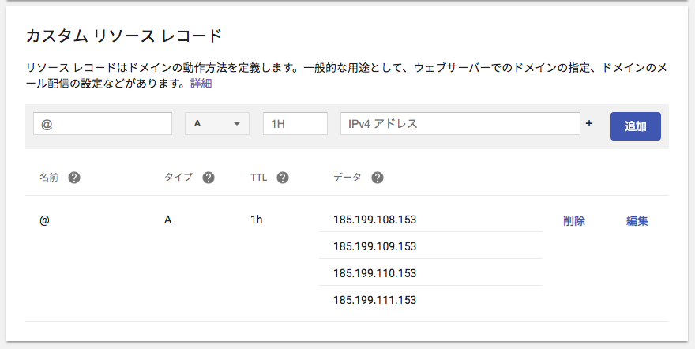

ドメインをnaoty.devにした
3/1から.devドメインが一般公開されたので、さっそくnaoty.devをGoogle Domainsで購入した。1,400円/年だった。Google Domainsは初めて使ってみたけど、分かりやすくて簡単に購入できた。
このホームページはGitHub pagesを使ってホスティングしているんだけど、Google Domainsで購入したドメインを設定するときに若干ハマったので、同じような人がいたら参考にしてもらいたい。
やること
- GitHubのヘルプに書いてある通りにやる。Google Domainsで設定する場合は、Aレコードを設定すればいい。

- 気長に待つ。
ハマったところ
気長に待っても表示されない場合、自分の場合は自分のPCだけ何故かアクセスできなかったんだけど、原因をよく調べた結果、Powを使っていたためだった。
PowはローカルにRackサーバーを立ててくれるツールで、localhost以外のドメインでローカルのRailsサーバーにアクセスしたいとき（サブドメインを扱う場合とか）に便利なんだけど、デフォルトで.devをトップレベルドメインに使う（現在は.testを使うことが推奨されているみたい）ため、naoty.devにアクセスしたときにPowのサーバーに転送されていたのだった。